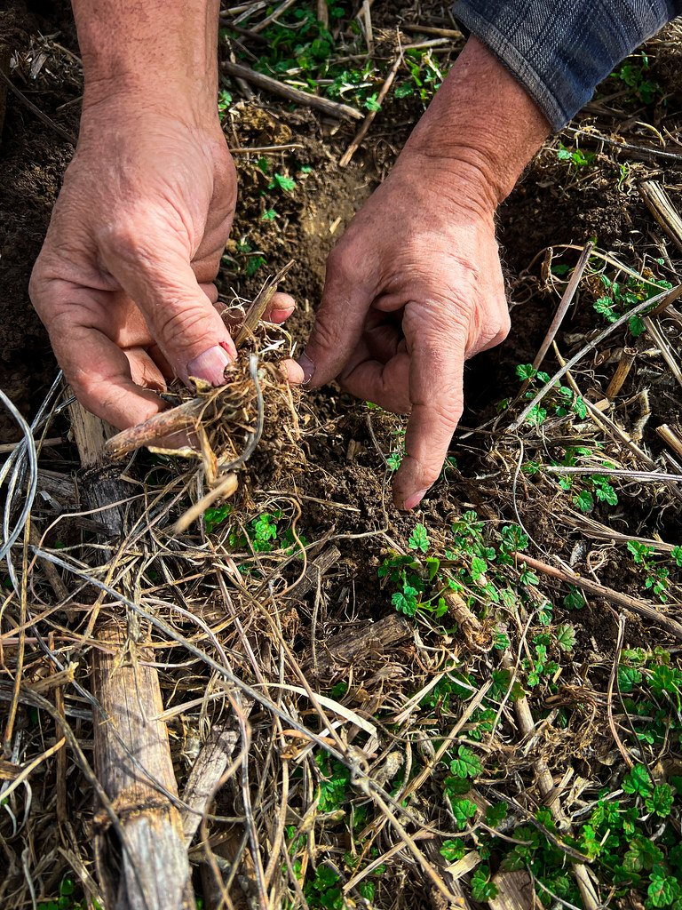

Most About pages lead with the best case. I’d rather you knew the edges first — the four honest limits of this bin, each one tied to a number I measured rather than chose. On the water you learn a thing’s worth by where it fails, not where it shines. If these edges suit your kitchen, the rest is easy.

I Four honest limits
It can’t keep up past five gallons a day
Every hull has a waterline, and this bin has one too. It’s sized for a household of four. Feed it a restaurant’s worth of scraps and the colony falls behind — this is a kitchen tool, not a facility.
- 5 gal
- Max per day
It can’t turn scraps to soil overnight
Composting is biology, and biology keeps its own schedule — you can’t rush a tide. What it can do is hold for two weeks with no food and no attention while you’re away.
- 2 wks
- Unattended
It can’t be left out of trim
Balance matters the way it does in a bilge: too wet and it sours, too dry and it stalls. Scraps run 50–90% water, and the bin stays quiet and odorless only when that balance is kept.
- 50–90%
- Water in scraps
It wasn’t cheap or quick to build right
It took fourteen prototypes before the lines were true, and it still ships in short runs, checked one unit at a time. There is sometimes a wait — that isn’t a tactic, it’s honest assembly.
- 14
- Prototypes
“Forty years on the waterfront taught me a fitting either holds back
the sea or it doesn’t. A bin is no different — it holds or it doesn’t, and
the rest is talk.”
It may be doubted whether there are many other animals which have played so important a part in the history of the world as these lowly organised creatures.Charles Darwin · on the earthworm, 1881
II What it’s made of
Photograph of the bin — to be added

i

ii
iii
- Eats per day
- 5 gallons
- Water in scraps
- 50–90%
- Left alone
- 2 weeks
- Sized for
- A household of 4
III How it’s built
1
Fourteen prototypes
The seventh one I was sure of. I ran it three months, then it soured a full batch and the smell ran me out of my own kitchen — forty years on the water hadn’t taught me a thing about how a colony drowns. I had it wrong, and the bin that ships is the one that finally proved me wrong slowly enough to fix.
2
Built to outlast the weather
Powder-coated steel and beechwood, with a brass tap for the tea. Sized for a household of four, quiet, and odorless when the colony is in trim. Made to sit in the open for a decade, not hide in a garage for a season.
3
Checked by one pair of hands
I assemble in short runs and check each unit myself — old waterfront habit, and a good one. The wait isn’t a tactic; it’s just how long good assembly takes when one person still insists on doing it.
IV The promise, in four lines
i
The numbers are measured, not rounded up
Every figure on this page was checked on a bench, not chosen for a headline.
ii
We tell you what it can’t do
If something isn’t ready, you’ll read that here before you read a claim about it.
iii
It ships slowly, on purpose
Short runs, checked one unit at a time. The wait is honest assembly, not a tactic.
iv
The promise outlasts the maker
Whoever assembles your bin, it is held to these same four lines.
V Who stands behind it
I’m Cornell Briggs. For forty years I built and mended boat hardware on the San Pedro waterfront — bronze fittings and marine steel that had to survive salt, sun, and a decade of weather without anyone thinking about them twice. When my family tried to compost our own scraps, every bin we could buy was built for a garage or a farm: loud, ugly, or the size of a chest freezer. None of it was made to last, and none of it belonged in a kitchen.
So I built the one I’d put my stamp on. A page that leads with a product’s limits ought to come from a person willing to put a name to them — so here is mine. The four limits above aren’t a humility act; they are the honest edges of a bin I’d rather you buy with open eyes than return with a grievance.
Cornell Briggs